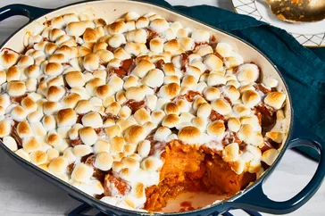

Candied Yams

This candied yams recipe is a simple and quick way to enjoy a Thanksgiving
favorite! Canned yams or sweet potatoes may be used.
Although there's no rule against making candied yams any time you want,
there are three times a year when candied yam recipes reach their peak
popularity: Thanksgiving by far leads the way, with Christmas and Easter
coming in a distant second and third.
Ingredients
- 1 (29 ounce) can sweet potatoes, drained
- ¼ cup butter, cut into pieces
- ½ cup brown sugar
- 1 ½ cups miniature marshmallows
Steps
-
Gather all ingredients. Preheat the oven to 400 degrees F (200 degrees
C).
-
Place drained sweet potatoes in a medium baking dish. Distribute butter
pieces evenly over the sweet potatoes.
- Sprinkle with brown sugar. Layer with miniature marshmallows.
-
Bake in the preheated oven until sweet potatoes are tender and
marshmallows have melted, about 20 to 25 minutes.
- Enjoy!